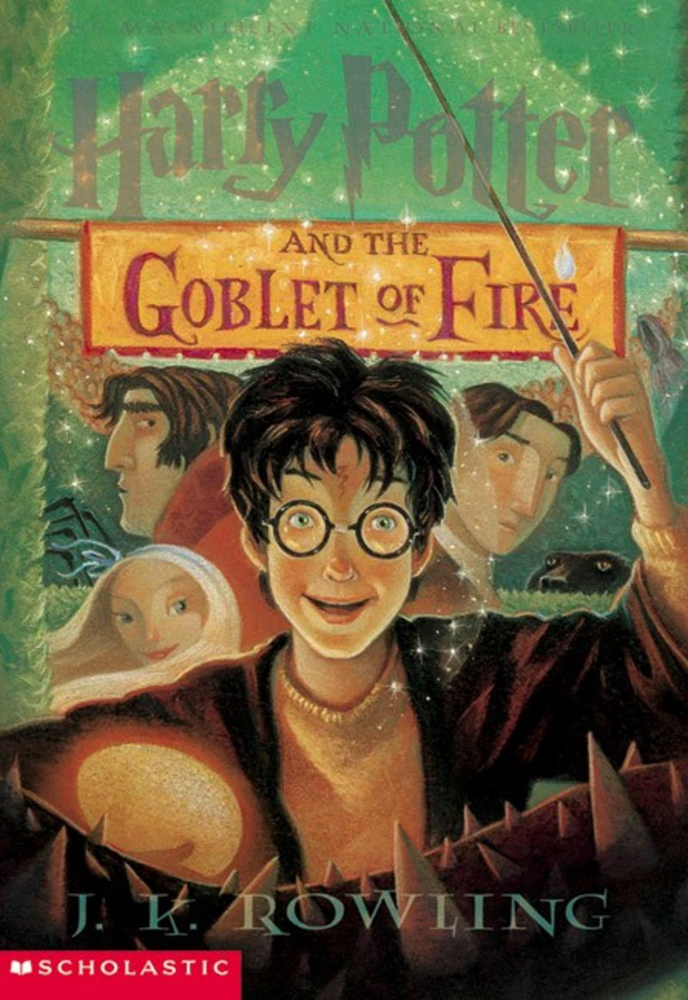

Harry Potter and the Goblet of Fire (Book 4)
Synopsis
Harry Potter is midway through his training as a wizard and his coming of age. Harry wants to get away from the pernicious Dursleys and go to the International Quidditch Cup. He wants to find out about the mysterious event that's supposed to take place at Hogwarts this year, an event involving two other rival schools of magic, and a competition that hasn't happened for a hundred years. He wants to be a normal, fourteen-year-old wizard. But unfortunately for Harry Potter, he's not normal - even by wizarding standards. And in his case, different can be deadly.
Download PDF- Chapter 01 - The Riddle House
- Chapter 02 - The Scar
- Chapter 03 - The Invitation
- Chapter 04 - Back to The Burrow
- Chapter 05 - Weasley's Wizard Wheezes
- Chapter 06 - The Portkey
- Chapter 07 - Bagman and Crouch
- Chapter 08 - The Quidditch World Cup
- Chapter 09 - The Dark Mark
- Chapter 10 - Mayhem at the Ministry
- Chapter 11 - Aboard the Hogwarts Express
- Chapter 12 - The Triwizard Tournament
- Chapter 13 - Mad-Eye Moody
- Chapter 14 - The Unforgivable Curses
- Chapter 15 - Beauxbatons and Durmstrang
- Chapter 16 - The Goblet of Fire
- Chapter 17 - The Four Champions
- Chapter 18 - The Weighing of the Wands
- Chapter 19 - The Hungarian Horntail
- Chapter 20 - The First Task
- Chapter 21 - The House-Elf Liberation Front
- Chapter 22 - The Unexpected Task
- Chapter 23 - The Yule Ball
- Chapter 24 - Rita Skeeter's Scoop
- Chapter 25 - The Egg and the Eye
- Chapter 26 - The Second Task
- Chapter 27 - Padfoot Returns
- Chapter 28 - The Madness of Mr Crouch
- Chapter 29 - The Dream
- Chapter 30 - The Pensieve
- Chapter 31 - The Third Task
- Chapter 32 - Flesh, Blood and Bone
- Chapter 33 - The Death Eaters
- Chapter 34 - Priori Incantatem
- Chapter 35 - Veritaserum
- Chapter 36 - The Parting of the Ways
- Chapter 37 - The Beginning